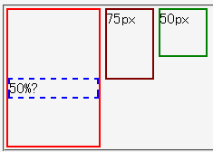

相対配置した要素に対してtopプロパティを%値で指定すると、その数値はpx単位で配置される。具体的には、 top: 30%; が top: 30px; であるかのように扱われる。
<div style="width:100px; height:150px; border:2px solid red; float:left;"> <div style="position:relative; top:50%; border:2px dashed blue;">A</div> </div> <div style="width:50px; height:75px; border:2px solid maroon; float:left;">75px</div> <div style="width:50px; height:50px; border:2px solid green; float:left;">50px</div>
高さ150pxのdiv要素内の、上から50%の位置に青いボーダーのdiv要素を配置しています。横にあるものは比較用に置いたdiv要素で、緑のボーダーを持つ要素は高さを（150pxの50%で）75pxに、茶色のボーダーを持つ要素は高さを50pxにしています。
Moz1.0.1での表示
Opera6.05での表示
Opera6.05では不具合の発生が確認されました。Opera7.0では標準・互換モードともに不具合の発生は確認されませんでした。